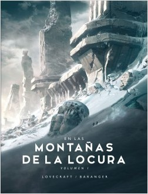

El conde de montecristo Es una novela literaria clásica, donde se enfatiza el amor, la venganza. El idioma original de El conde de Montecristo se encuentra en francés, y su fecha de publicación fue en 1844, su escritor fue Alejandro Dumas. El tema principal de la novela El Conde de Montecristo es la venganza, aunque la novela lo toma como justicia propia, Edmond Dantés toma la justicia en sus propias manos porque está consternado por las limitaciones del sistema de justicia penal de la sociedad. La justicia social ha permitido que sus enemigos se escapen por las grietas, quedando impunes por los crímenes atroces que han cometido contra él. Además, incluso si los crímenes de sus enemigos fueron descubiertos, Dantés no cree que su castigo sea la verdadera justicia. Aunque sus enemigos le han causado años de angustia emocional, lo máximo que ellos mismos se verían obligados a sufrir serían unos pocos segundos de dolor, seguidos por la muerte. Una novela interesante es Crónica de una Muerte Anunciada.
